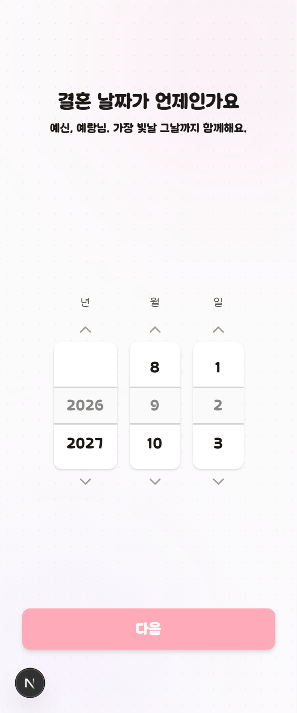

C안 · 10
온보딩
면을 달지 않습니다. 이 화면은 한 번에 하나씩 묻는 연출이고, 위에 분홍 덩어리가 붙으면 질문이 화면의 주인이 아니게 됩니다. 대신 몇 개나 더 묻는지를 진행 막대로 보여 주고, 입력 칸만 SEED 로 맞춥니다.

결혼 날짜가
언제인가요
예신, 예랑님. 가장 빛날 그날까지 함께해요.
년
2025
2026
2027
월
10
11
12
일
13
14
15
2026년 11월 14일 토요일 · D-74
진행 막대를 답니다
지금 폰에는 몇 단계가 남았는지 아무 표시가 없습니다. 웹은
≥1024 에서 좌측 패널에 남은 질문을 보여 주는데, 폰에서는
묻는 대로 따라가는 수밖에 없습니다. 4px 막대 하나면 이탈이
줄어듭니다.
다음 버튼
지금은 값을 고르기 전에도 흐린 분홍으로 눌리게 보입니다.
고르기 전에는 회색(disabled), 고른 뒤에 진한 분홍으로
바꿉니다.
고른 값을 문장으로
휠 아래에 "2026년 11월 14일 토요일 · D-74" 한 줄을 냅니다. 숫자 세 칸만 보고 요일과 남은 날을 머릿속에서 계산하게 두지 않습니다.
지키는 것 — 단계 수
회원은 5단계, 게스트는 4단계입니다. 게스트는 방이 없어 공유 코드가 안 나오므로 함께할 사람 단계를 아예 내지 않습니다. 진행 막대의 분모도 여기서 갈립니다.
지키는 것 — 초대는 약관 다음
초대를 약관 앞으로 옮기지 마세요. 날짜·예산·이름은
handleGoToMain 의 POST /plan/setting 에서만
저장되고 그건 약관 다음입니다. 앞에 두면 초대받은 사람이 빈 플랜에
들어오고, 제3자 제공 동의 전에 접근 링크가 나갑니다.
하네스가 두 요청의 순서를 봅니다.
지키는 것 — 연출 화면
축하·환영·출입증(Lanyard) 은 전체 화면 연출이라 진행 막대를
달지 않고 단계로 세지도 않습니다. components/Lanyard.tsx 의
window.innerWidth 는 그대로 둡니다 —
useMediaQuery 로 바꾸면 모바일에서 물리 월드가 다시 잡힙니다.